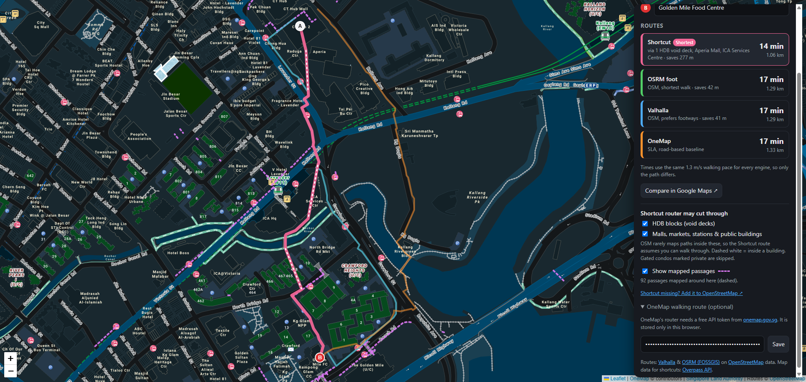

Walk the shortcut, not the road.
Google Maps sends you around HDB blocks and malls. 步行 takes you through them, under void decks, along linkways and across the mall, so your walk is shorter and you see how much of it is sheltered.

1.06 km · 14 min vs 1.33 km road routeThe problem
Measured on real walks
Same start, same end, same 1.3 m/s walking pace. The only difference is that 步行 is allowed to go through the buildings.
CT Hub 2 → Golden Mile Food Centre
Saves 277 m (about 3 min) through Aperia Mall, the ICA Services Centre and a void deck.
Yishun MRT → Chong Pang
Saves 370 m (about 5 min) by walking through 9 HDB void decks.
Toa Payoh Bus Interchange → Toa Payoh Central
Saves 111 m through the shop blocks around the hub.
Compared with the longest road-following route among OneMap (SLA), Valhalla and OSRM for the same two points. All three follow roads and footpaths like Google Maps does; we didn't time Google itself.
Who it's for
If you get around Singapore on foot, even for just the last few hundred metres, 步行 is for you.
The fastest way to the MRT or bus stop, through the blocks in between.
Lunch runs to the hawker centre that don't waste your break walking round the block.
Shorter walks to school, tuition and the library, with a heads-up when rain is coming.
Errands to the market or clinic with less time in the sun, so you can see how much of the walk is sheltered.
Getting to the playground, the CC or the kopitiam the way the neighbours do.
Explore the heartlands like a local, with directions that say "through the void deck of Blk 744".
What 步行 does
One map, every route side by side, and honest about what it assumes.
Routes through HDB void decks, malls, markets and MRT stations. The parts inside a building are drawn dashed, so you know where you're cutting through.
The road-following routes are shown too, so you can see exactly how many metres and minutes the shortcut saves.
AI rewrites the route the way a local would explain it, using only the router's own street names and block numbers.
Checks NEA's 2-hour forecast and tells you how much of the walk is sheltered. The shortest route stays the same, so it only warns you.
Walking map data for the whole island is stored with the app, so a route appears in a fraction of a second.
Void decks and malls are assumed open, and gated condos are skipped. Found a missing shortcut? Add it to OpenStreetMap in one tap.
How it works
Tap the map or search a place, like an MRT station, block or food centre.
It links the paths around every HDB block and mall straight through the building, but never across a river, main road or fence.
Get the shortest walk, plain-English directions and a rain check, next to the road routes for comparison.
Plan your next walk with 步行 and take the shortcut the locals take.